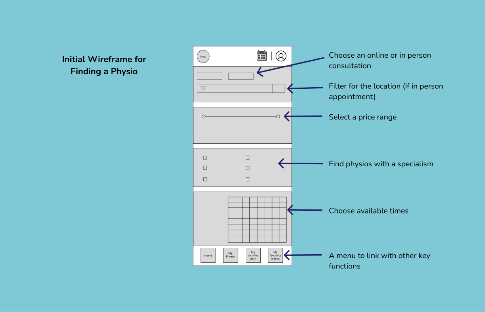

CIRA is a new way for climbers to approach injury recovery. The
online access to physio appointments is quick and efficient. The
training plans are designed to address climbing specific, common
injuries so that people can have a speedy recovery.
The Process - a user persona
I wrote a user persona for Anita, a keen climber who uses climbing as a
basis for her social life and mental well-being as well as a major form
of exercise. When she is injured it has a huge impact on many different
areas of her life.
The Solution No. 1- a wireframe
I drew up a wireframe with the key functions of:
Booking a physio in a specific area
Choosing a price range
Finding a physio with a specialism
A feature to find physio availability

The Solution No. 2- a simple filter
Ensuring that users were able to make simple choices was very
important to the way the app functioned. Different systems were tested
to simplify the choices, finally the dropdown menu worked well, it was
simple and clear.
The Solution No. 3- a simple booking system
Users could clearly see dates when the chosen physio had
availability. An overlay showed available times A choice could then be
made to book that slot. The use of overlays meant that a user only had
to make one decision at a time.
Ensuring that users were able to make simple choices was very
important to the way the app functioned. Different systems were tested
to simplify the choices, finally the dropdown menu worked well, it was
simple and clear.